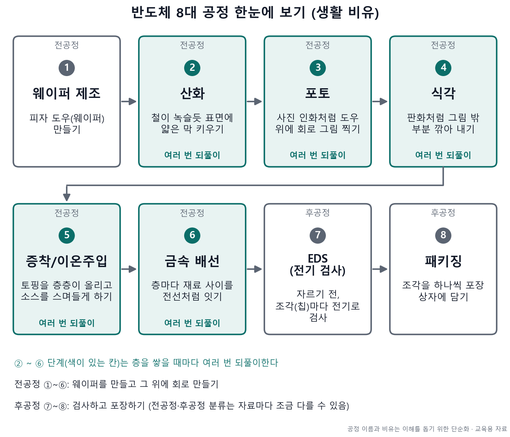
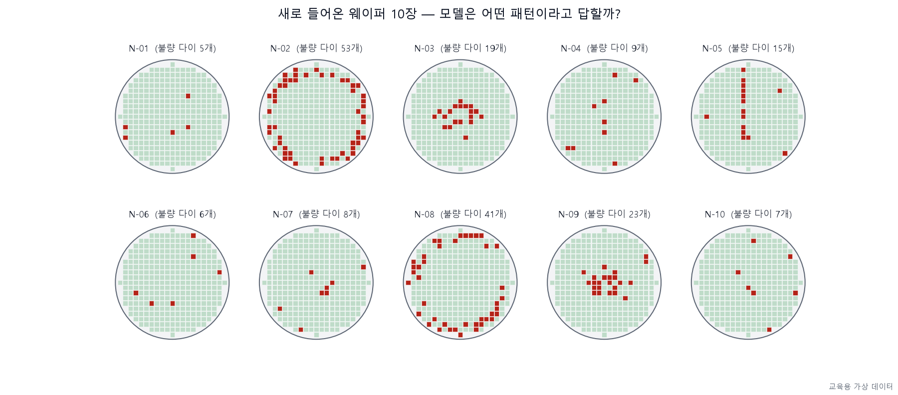

Tree·kNN·Logistic Regression을 끌어 와 각각 위 File에 잇는다.
Tree를 더블클릭해 Limit the maximal tree depth to를 4로 바꾼다(9차시와 같은 깊이). 옆 체크박스는 이미 켜져 있으니 숫자 100만 4로 바꾼다. 깊이를 그대로 두면 오류 없이 결과가 달라진다.오늘의 질문: "내가 만든 모델은 처음 보는 새로운 데이터에서도 믿을 만할까?"
오늘의 미션 — 입사 열째 날, 마지막 날이다. 아직 검사하지 않은 새 로트 9개의 예측 결과와 10일간의 분석을 보고서 한 장으로 정리하자. 모델은 몇 개를 불합격으로 예측할까? 그 예측은 얼마나 믿을 만할까? (신입 데이터 담당자의 10일 이야기와 공장·설비·데이터는 모두 교육용 가상이다.)

model.predict()로 정답이 없는 새 데이터를 예측할 수 있다.선수 지식: 9차시 — 결정 트리, Test and Score·Confusion Matrix, 정확도와 기준선 / 8차시 — 원인 후보 / 7차시 — True/False로 개수 세기 / 1차시 — f-string
모델을 만드는 이유는 아직 검사하지 않은 새 로트를 미리 보기 위해서다. 그런데 9차시 모델의 정확도 80.3%는 "모두 합격"이라고 찍는 78.9%와 큰 차이가 없었다.
그래서 오늘은 새 데이터에 쓰기 전에 두 가지를 확인한다. 다른 모델도 같은 답을 내는지, 그리고 그 숫자를 보고서에 옮길 때 틀리거나 부풀리지 않았는지다.
오늘 새로 쓰는 말은 세 개다. 나머지 위젯은 9차시에 써 봤다.
불량패턴, 합격여부) 열이 없는 표. 모델이 맞혀야 할 대상이다.AI 답은 틀릴 수 있으니 확인 포인트와 비교하세요. 개인정보·실제 회사 데이터는 넣지 마세요.
검색어 kNN 이웃 투표
데이터 분석을 처음 배우는 사람에게 kNN(k-최근접 이웃) 분류가 처음 보는 데이터의 답을 어떻게 정하는지 '이웃에게 물어보기' 비유로 3문장 안에 설명해줘. 이웃 수 k를 작게 하거나 크게 하면 무엇이 달라지는지도 알려줘.| 위젯(화면 이름) | 어느 묶음에 있나 | 한국어 뜻 | 오늘 하는 일 |
|---|---|---|---|
File | Data | 파일 불러오기 | 캔버스에 두 개가 이미 있다. 위 = 학습용(정답 있음), 아래 = 새 데이터(정답 없음) |
Tree | Model | 결정 트리 | 9차시와 같은 모델. Limit the maximal tree depth to를 4로 둔다 |
kNN | Model | 이웃 투표 | 오늘 새 위젯. 설정은 그대로 둔다 |
Logistic Regression | Model | 로지스틱 회귀 | 오늘 새 위젯. 설정은 그대로 둔다 |
Test and Score | Evaluate | 평가 | 세 모델을 한 표에서 채점한다(9차시에 써 봤다). Number of folds를 10으로 바꾼다 |
Confusion Matrix | Evaluate | 헷갈림 표 | 모델마다 실제 답과 예측이 어떻게 엇갈렸는지 칸으로 본다(9차시에 써 봤다) |
Predictions | Evaluate | 예측 | 오늘 새 위젯. 새 데이터를 넣어 모델마다 답을 받는다 |

1차시에 본 공정 지도(교육용 단순화, 가상 데이터로 그린 그림). ② 산화부터 ⑥ 금속 배선까지는 층마다 되풀이하고, ⑦ EDS에서 칩마다 전기 검사를 한다.
week09_orange_wafer_patterns.csv(9차시 웨이퍼 240장) — 공정 지도 위치: ⑦ EDS 웨이퍼 맵 요약.week10_orange_new_wafers.csv(새 웨이퍼 10장) — 공정 지도 위치: ⑦ EDS 새 웨이퍼 맵 요약.week09_pass_fail_train.csv(공정 기록 750행) — 공정 지도 위치: ②~⑤ + 세정 공정 조건 → ⑦ 결과.week09_new_lots_to_predict.csv(새 로트 9개) — 공정 지도 위치: ②~⑤ + 세정을 마쳤지만 아직 ⑦ 검사 전인 새 로트.9차시에 웨이퍼 240장의 불량 모양(정상·중심형·가장자리형·스크래치형)을 결정 트리로 나눴다. 오늘은 ⑦ 전기 검사를 막 마친 새 웨이퍼 10장(교육용 가상 데이터)이 들어왔다. 불량 모양 이름은 아직 아무도 붙이지 않았다. "정상"은 불량 다이가 몇 개 흩어져 있을 뿐 뚜렷한 모양이 없는 웨이퍼라는 뜻이다(불량 0개라는 뜻이 아니다).
| 열 | 뜻 |
|---|---|
웨이퍼ID | 새 웨이퍼 이름(N-01~N-10) |
불량다이수_count | 웨이퍼 한 장에서 불합격한 다이(칩이 될 작은 네모) 수. _count = 센 수 |
중심불량비율_pct, 가장자리불량비율_pct | 불합격 다이 중 가운데 쪽 / 가장자리 쪽에 있는 비율(퍼센트). _pct = 퍼센트 |
직선불량비율_pct | 불합격 다이 중 한 직선 위에 늘어선 비율. 긁힌 자국(스크래치)의 단서다. 불량 다이가 몇 개 안 되면 흩어져 있어도 우연히 한 줄에 놓인 비율이 높게 나온다(예: N-01, N-10은 그림에서 흩어져 있지만 이 값이 50%를 넘는다) |

새로 들어온 웨이퍼 10장(빨간 칸 = 불합격 다이, 불량 다이 수만 표시). 세 모델은 어떤 모양이라고 답할까? 모델끼리 답이 갈리는 웨이퍼를 찾아보자(교육용 가상 데이터).
week10_1_newwafers_start.ows를 연다.week10_1_newwafers_done.ows(완성본)를 연다.
Tree·kNN·Logistic Regression을 끌어 와 각각 위 File에 잇는다.
Tree를 더블클릭해 Limit the maximal tree depth to를 4로 바꾼다(9차시와 같은 깊이). 옆 체크박스는 이미 켜져 있으니 숫자 100만 4로 바꾼다. 깊이를 그대로 두면 오류 없이 결과가 달라진다.Test and Score를 위 File에 잇고, 세 모델을 모두 Test and Score에 잇는다.
창 왼쪽 Cross validation의 Number of folds를 10으로 바꾼다(새로 놓으면 5로 시작한다). 오른쪽 표에서는 CA(정확도) 한 칸만 본다. AUC·F1 같은 다른 열은 오늘 보지 않는다. 세 모델의 CA를 메모해 두었다가 PART 3에서 실습지 문제 3에 옮겨 적는다.
Predictions를 아래 File에 잇고, 세 모델도 Predictions에 잇는다.
창 오른쪽에 모델 이름 열 세 개가 생긴다. 줄(웨이퍼)마다 세 답이 같은지 본다.
새 데이터에는 정답 열이 없어 처음에는 확률이 안 보입니다. Predictions 표 위의 Show probabilities for를 Classes known to the model로 바꾸세요. 그러면 답 앞에 확률 네 개(정상 : 중심형 : 가장자리형 : 스크래치형 순서)가 보인다.
AI 답은 틀릴 수 있으니 확인 포인트와 비교하세요. 개인정보·실제 회사 데이터는 넣지 마세요.
검색어 예측 확률의 뜻
분류 모델이 어떤 웨이퍼를 '중심형일 확률 0.6'이라고 답했을 때 이 숫자가 무슨 뜻인지 데이터 분석을 처음 배우는 사람에게 3문장으로 설명해줘. 이 숫자가 실제로 맞을 확률을 보장하는지도 알려줘.9차시 공정 기록(학습용 750행)과 아직 검사하지 않은 새 로트 9개다. File → Open으로 week10_2_newlots_start.ows를 연다. 위 File = 학습용, 아래 File = 새 로트다.
설비 4대(EQ-01~EQ-04)가 여러 공정 기록을 함께 남겼다(교육용 가상 기록).
| 열 | 공장에서의 뜻 |
|---|---|
공정명, 설비번호 | 어떤 작업을 어느 기계에서 했나. Orange에서는 이름표(meta)로만 두고 단서로 쓰지 않는다 |
온도_C, 압력_Pa, 가스유량_slm, 두께_nm, 진공도_mTorr, 습도_pct | 단서 열 6개(Feature). _C = 섭씨 도, _nm = 나노미터, _pct = 퍼센트, _slm = 분당 가스 양, _Pa·_mTorr = 압력 단위(이 가상 데이터의 압력 값은 크기를 해석하지 않는다) |
합격여부 | ⑦ 검사 결과(정답 열, Label). 1 = 합격, -1 = 불합격. 새 로트 파일에는 이 열이 없다 |

기준선과 함께 읽기 — 학습용 750행 중 합격(1)이 595행이다. 모두 합격이라고 찍으면 595 ÷ 750 = 79.3%(0.793)다. 세 모델 모두 이 기준선 근처다. 웨이퍼 모양(CA 0.90 이상, 기준선 50%)과 달리, 공정 기록 6개 열에는 합격·불합격을 가를 단서가 약하다.
Confusion Matrix를 잇는다. 창 왼쪽 목록에서 모델을 하나씩 눌러 바꿔 본다.
행 = 실제 답, 열 = 예측이다. 실제 -1 행의 예측 1 칸이 놓친 불합격이다.| 모델 | CA | 실제 불합격 155건 중 놓친 수(예측 1) | 불합격으로 예측한 수(예측 -1 열 합계) |
|---|---|---|---|
| Tree | 0.783 | 114 | 90 |
| kNN | 0.769 | 135 | 58 |
| Logistic Regression | 0.793 | 155 | 0 |

공장 말로 읽기 — CA가 가장 높은 Logistic Regression은 750건을 모두 합격으로 예측했다. 불합격을 하나도 걸러 내지 않는데 정확도는 기준선(0.793)과 똑같다. 정확도 한 숫자로 모델을 고르면 이런 모델을 "가장 좋다"고 고를 수 있다.
AI 답은 틀릴 수 있으니 확인 포인트와 비교하세요. 개인정보·실제 회사 데이터는 넣지 마세요.
검색어 혼동행렬 읽는 법
공장 검사 결과를 예측하는 모델에서, 불합격 기록(로트)을 합격으로 잘못 예측하는 것과 합격 기록(로트)을 불합격으로 잘못 예측하는 것은 각각 어떤 문제가 생길 수 있는지 혼동행렬(confusion matrix)을 처음 배우는 사람에게 3문장으로 설명해줘.9차시에 만든 결정 트리 코드를 한 셀에 모았다. 이 셀을 먼저 실행해야 아래에서 model을 쓸 수 있다.
import pandas as pd
from sklearn.model_selection import train_test_split
from sklearn.tree import DecisionTreeClassifier
from sklearn.metrics import accuracy_score
df = pd.read_csv("week09_pass_fail_train.csv", encoding="utf-8-sig").dropna()
features = ["온도_C", "압력_Pa", "가스유량_slm", "두께_nm", "진공도_mTorr", "습도_pct"]
X = df[features]
y = df["합격여부"]
X_train, X_test, y_train, y_test = train_test_split(X, y, test_size=0.2, random_state=42, stratify=y)
model = DecisionTreeClassifier(max_depth=4, random_state=42)
model.fit(X_train, y_train)
acc = accuracy_score(y_test, model.predict(X_test))
print(f"정확도: {round(acc * 100, 1)}%")정확도: 80.3%
X_train, 연습문제)과 시험용 147행(X_test, 모의고사)으로 나눠, 학습용으로만 학습했다.model.predict(X_test)가 오늘 배우는 함수다. 시험용 147개의 답을 모델이 맞혀 본 것이고, 그 답을 정답 y_test와 맞춰 정확도를 냈다.새 로트 파일(교육용 가상 데이터)에는 정답(합격여부) 열이 없다. 모델이 맞혀야 할 대상이다.
new_lots = pd.read_csv("week09_new_lots_to_predict.csv", encoding="utf-8-sig")
print(new_lots.shape)(9, 8)
9행 8열이다. 학습용 표의 9열에서 합격여부 하나가 빠졌다.
model.predict(…)는 표를 받아 줄마다 답(1 또는 -1)을 돌려준다. 시험 때 X_test를 넣었듯, 새 로트에도 학습할 때와 같은 열 6개(features)만 골라 넣는다.new_lots["예측"] = …로 새 열에 담는다(7차시에 새 열 만들기를 했다). 예측 열도 합격여부와 같은 규칙이다: 1 = 합격, -1 = 불합격.# TODO: 예측하는 함수 이름과, 학습 때와 같은 열 목록 변수 이름을 채우세요.
new_lots["예측"] = model.____(new_lots[____])
print(new_lots[["공정명", "설비번호", "온도_C", "예측"]])predict, features — features는 변수 이름이라 따옴표로 감싸지 않는다. "features"로 쓰면 KeyError: 'features'가 난다.공정명 설비번호 온도_C 예측 0 식각 EQ-02 294.5 1 1 산화 EQ-02 301.5 1 2 식각 EQ-04 289.8 -1 3 포토 EQ-04 295.6 1 4 식각 EQ-04 299.1 1 5 포토 EQ-03 302.0 1 6 산화 EQ-01 305.2 1 7 산화 EQ-03 299.1 1 8 세정 EQ-01 300.6 1
맨 왼쪽 숫자는 0부터 센 행 번호라, 3번째 로트가 2로 보인다. 그 로트(식각 · EQ-04 · 289.8도)만 -1(불합격)로 예측됐다.
불합격 예측 개수를 문장으로 보고한다. 7차시에 True/False를 더해 개수를 셌던 것과 같은 원리다. f-string 안에서는 열 이름을 작은따옴표 '예측'으로 쓴다(바깥 큰따옴표와 겹치지 않게).
print(f"새 로트 {len(new_lots)}개 중 불합격 예측 {(new_lots['예측'] == -1).sum()}개")새 로트 9개 중 불합격 예측 1개
공장 말로 읽기 — 이 예측은 "3번째 로트부터 먼저 살펴보자"는 참고다. 예측은 확정 판정이 아니므로 모델이 좋든 나쁘든 9개 모두 ⑦ 검사는 그대로 한다(게다가 이 모델은 정확도가 기준선과 큰 차이가 없다).
오늘의 숫자를 ChatGPT에 주고 팀장에게 보낼 보고서를 써 달라고 한다. 노트북 4단계에 같은 프롬프트가 있다.
아래는 교육용 가상 데이터로 만든 반도체 공정 합격/불합격 예측 결과야. 팀장에게 보낼 3문장 보고서를 써 줘. 결과를 원인으로 단정하지 말고 "원인 후보"라는 표현을 쓰고, 마지막에 가상 데이터라는 점을 밝혀 줘.
- 결정 트리 정확도(시험용 147개): 80.3%
- 기준선(모두 합격이라고 찍었을 때의 정확도): 78.9%
- Orange Confusion Matrix(결정 트리, 10겹 교차검증, 750건): 실제 불합격 155건 중 114건을 합격으로 예측(놓침)
- 새 로트 9개 예측: 불합격 1개(3번째 로트), 합격 8개ChatGPT를 쓸 수 없으면 아래 응답 예시(노트북 4단계에도 같은 글이 있다)로 같은 활동을 한다. 내 ChatGPT 답을 받았다면 그 답도 같은 방법으로 검증한다.
새 로트 9개 중 결정 트리가 불합격으로 예측한 로트는 2개이며, 3번째 로트(식각·EQ-04, 온도 289.8도)가 그중 하나입니다. 모델 정확도는 80.3%로 모두 합격이라고 찍는 기준선 78.9%와 큰 차이가 없고, Orange 교차검증에서는 실제 불합격 155건 중 114건을 합격으로 놓쳤습니다. 3번째 로트는 온도가 낮아서 불합격이 생깁니다(이 결과는 교육용 가상 데이터로 만든 것입니다).
print(f"정확도: {round(acc * 100, 1)}%")
print(f"기준선(모두 합격): {round((y_test == 1).mean() * 100, 1)}%")
print(f"불합격 예측: {(new_lots['예측'] == -1).sum()}개")
print(new_lots[new_lots["예측"] == -1][["공정명", "설비번호", "온도_C"]])정확도: 80.3% 기준선(모두 합격): 78.9% 불합격 예측: 1개 공정명 설비번호 온도_C 2 식각 EQ-04 289.8
두 번째 줄의 기준선은 시험용 147개 중 합격(1)의 비율이다. True/False의 평균이 비율이 되는 것은 7차시에 배웠다.
| 파이썬(오늘 PART 2) | Orange(오늘 PART 1) | |
|---|---|---|
| 학습한 데이터 | 빈칸 행을 지운 735행 중 학습용 588행 | 750행 전체(빈칸 포함) |
| 트리 기본 설정 | scikit-learn 결정 트리(깊이 4) | Orange Tree(깊이 4, 잎·분할 최소 개수 같은 다른 기본값은 조금 다름) |
| 채점 방법 | 떼어 둔 시험용 147개 | 10겹 교차검증(750행을 10묶음으로 나눠 돌아가며 채점) |
| 결정 트리 정확도 | 80.3% | 0.783 |
| 기준선(모두 합격) | 78.9%(시험용 147개 기준) | 79.3%(750행 기준) |
| 새 로트 불합격 예측 | 1개(3번째 로트) | (실습지 문제 4에서 직접 확인한다) |
한 문장으로 — 학습한 데이터와 트리 기본 설정이 달라 같은 결정 트리라도 예측이 달라질 수 있고, 정확도는 채점 방법까지 달라 숫자가 조금씩 다르다. 그래서 보고서에는 숫자와 함께 어디서 나온 숫자인지도 적는다.
10차시 실습지를 열고 순서대로 푼다.
predict()로 예측해 불합격 예측 개수를 세고, 실제 불합격 개수와 함께 한 문장으로 보고한다. 문제 2는 빈칸 없이 직접 쓴다.week10_2_newlots_start.ows에 Predictions를 이어 새 로트 9개의 예측을 읽고, 파이썬 결과와 다른 로트가 있는지 확인한다.다 풀면 실습지의 "정답 보기"로 확인하고, 문제 5의 보고 문장을 옆 사람에게 읽어 준다.
model.predict(new_lots[features]) → 9개 중 -1이 1개features)만 넣어야 한다.week09_orange_wafer_patterns.csv — 240행 6열, 교육용 가상 데이터(PART 1 워밍업 학습용, 9차시와 같은 파일. Orange는 orange/ 폴더의 .tab을 연다).
공정 지도 위치: ⑦ EDS 웨이퍼 맵 요약.week10_orange_new_wafers.csv — 10행 5열, 교육용 가상 데이터(PART 1 워밍업 새 데이터, 정답 열 없음).
공정 지도 위치: ⑦ EDS 새 웨이퍼 맵 요약.week09_pass_fail_train.csv — 750행 9열(빈칸 있는 행을 지우면 735행), 교육용 가상 데이터(PART 1·2·3 학습용). 설비 4대가 여러 공정 기록을 함께 남겼다(교육용 가상 기록).
공정 지도 위치: ②~⑤ + 세정 공정 조건 → ⑦ 결과.week09_new_lots_to_predict.csv — 9행 8열, 교육용 가상 데이터(PART 1·2·3 새 데이터, 정답 열 없음).
공정 지도 위치: ②~⑤ + 세정을 마쳤지만 아직 ⑦ 검사 전인 새 로트.model.predict(new_lots)처럼 표를 통째로 넣으면
ValueError: The feature names should match those that were passed during fit.가 난다. 열이 하나 빠지거나 순서가 바뀌어도 같다.
학습 때와 같은 열 목록 features로 골라 넣는다.
NameError: name 'model' is not defined가 난다.
"막혔을 때" 셀대로 1단계부터 위에서 아래로 다시 실행한다.
____를 채우지 않으면 AttributeError: 'DecisionTreeClassifier' object has no attribute '____'나
NameError: name '____' is not defined가 난다. 빈칸을 아직 안 채웠다는 뜻이다.
2단계 빈칸을 채우지 않고 아래 셀까지 실행하면 KeyError: '예측'가 이어서 난다(예측 열이 아직 없다). 4단계 숫자 대조 셀도 두 줄만 찍고 같은 오류로 멈춘다. 2단계 빈칸 셀을 먼저 채워 실행한다.
불합격 숫자를 "-1"처럼 따옴표로 감싸면 오류 없이 0개가 나온다. 예측 열의 값은 글자가 아니라 숫자 -1이다.
predict(): 새 로트 9개 중 불합격 예측 1개(3번째 로트, 식각 · EQ-04 · 289.8도).복습 문제 전체는 quiz.json(수업 후 자율 복습)에 있다. 아래는 그중 일부다.
답이 갈린 웨이퍼의 숫자를 ChatGPT에 주고, 왜 헷갈릴 만한지 설명을 받아 본다. 받은 설명은 위 웨이퍼 맵 그림과 맞는지 직접 확인한다.
교육용 가상 데이터야. 웨이퍼 한 장에 불량 다이가 9개 있고, 그중 44.4%는 가운데 쪽, 55.6%는 가장자리 쪽, 33.3%는 한 직선 위에 있어. 이 웨이퍼를 정상·중심형·가장자리형·스크래치형 중 하나로 나누는 모델들이 서로 다른 답을 냈어. 왜 헷갈릴 만한지 데이터 분석을 처음 배우는 사람에게 3문장으로 설명해줘.신입 데이터 담당자의 10일이 끝났다. 공장 기록 40건을 손으로 세던 첫날부터, 처음 보는 로트를 예측하고 그 보고서를 검증한 오늘까지의 큰 줄기다.
기록 → 표 → 정리 → 그림 → 비교 → 원인 후보 → 예측
| 차시 | 큰 줄기 | 한 문장 | 공정 지도에서 |
|---|---|---|---|
| 1 | 기록 | 공장 기록표 40건의 합격·불합격을 변수와 f-string으로 한 문장에 담았다. | ②~⑤ + 세정 설비 기록(①~⑧ 공정 지도 첫 소개) |
| 2 | 기록 | 설비 온도 여러 개를 리스트에, 이름표 붙은 값을 딕셔너리에 담았다. | ②~⑤ + 세정 설비 기록 |
| 3 | 기록 | if·for·함수로 연습용 기준 판정을 컴퓨터에 맡겼다. | ②~⑤ + 세정 설비 기록 |
| 4 | 표 | Pandas로 CSV를 표로 읽고, 조건으로 필요한 행만 골랐다. | ①~⑧ 공정 흐름표, ②~⑤ + 세정 |
| 5 | 정리 | 빈칸·중복·튀는 값을 정리하고, 채우기 전에 튀는 값부터 확인했다. | ②~⑥의 클린룸, ②~⑤ + 세정 |
| 6 | 그림 | 그래프와 웨이퍼 맵으로 표에서 안 보이던 모양을 봤다. | ⑦ EDS 웨이퍼 맵, ②~⑤ + 세정 설비 기록 |
| 7 | 비교 | 설비별로 묶어 합격률과 불량 유형을 비교했다. | ④ 식각 설비 → ⑦ EDS 결과, ②~⑤ + 세정 → ⑦ |
| 8 | 원인 후보 | 상관계수와 범위 밖 비교로 원인 후보를 골랐다. | ④ 식각 챔버 센서, ②~⑤ + 세정 → ⑦ |
| 9 | 예측 | 결정 트리로 합격·불합격을 미리 맞히고, 기준선과 비교했다. | ⑦ EDS 웨이퍼 패턴, ②~⑤ + 세정 → ⑦ |
| 10 | 예측 | 모델 셋을 비교해 새 데이터를 예측하고, AI 보고서의 숫자와 표현을 검증했다. | ⑦ EDS 새 웨이퍼, ②~⑤ + 세정을 마친 ⑦ 검사 전 새 로트 |
공정 지도 칸은 그 차시에 쓴 데이터가 나온 곳이다(모두 교육용 가상 데이터).
도구는 파이썬과 Orange 두 가지였다. 파이썬은 코드로 정확히 세고, Orange는 위젯을 이어 눈으로 확인했다. 두 도구의 숫자가 다를 때는 정리·학습한 데이터나 설정, 채점 방법이 달랐다.